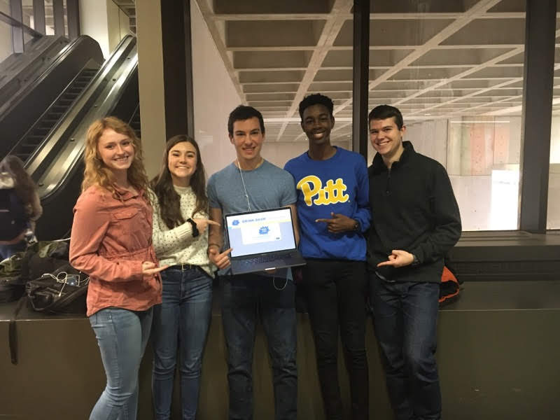
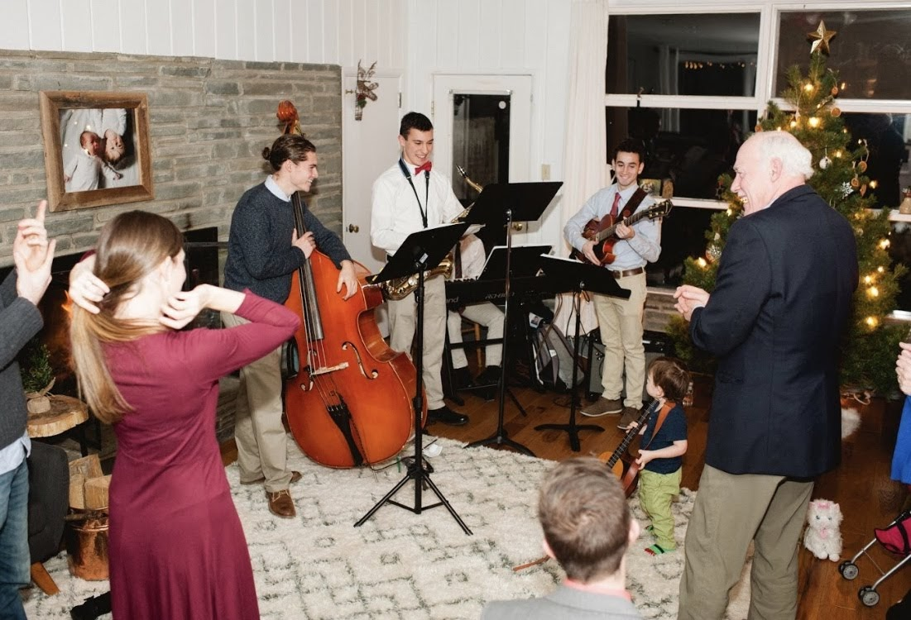

In my freshman year of high school, I went to a club fair and heard about the Computer Club. At the time, it was a group of 5 kids who stayed behind in the computer science classroom after school and played video games and participated in online hacking contests. I showed up on the first day with my gaming mouse in hand, ready to play. But I didn't end up playing video games that day. I watched in fascination as a mini computer called an Arduino was set up in a matter of minutes, while another member of the club created an LED light show with one. I became a regular at the club, and by Junior year, I was elected an officer. I took computer programming classes each semester, learning C++ and Java. Come senior year, I was the only officer left, as all the others graduated. I chose my friend Michael to lead the club with me, and together we revamped the format of the club, creating presentations about current events in the tech world and lessons on certain vital topics of computing. Such lectures included, "What is Blockchain?" and "The Importance of Cloud Computing." I decided to major in computer science in college, and I haven't looked back since. I made sure to continue my participance in computer related clubs in college. I plan to become a leader of one of these clubs. I have participated in a couple hackathons in my freshman year, and even won the grand prize in SteelHacks, a hackathon with over 300 participants from Pitt, Carnegie Mellon, and Duquesne.

I can't talk about my interests without mentioning music. Whether I'm vibing with Spotify or tinkering with my keyboard in my room, music has always been a big part of my life. I won't forget the day a grand piano was wheeled into the living room when I was just 5 years old. I play saxophone, clarinet, piano, and I've been dabbling with music production a little. In high school, I participated in the big band each year. I was the section leader of the saxophones in my senior year, and I was the concert master of the concert band, the largest musical group in the school. I had the privilege of playing the Third Movement of Mozart's Clarinet Concerto at the winter concert, which is a solo piece over 10 minutes long! I formed a combo with my good friends from the jazz band, and we went around our community and spread our love of jazz music, playing at Rotary Club events, and school related events. In college, I auditioned and made the big band as a freshman. I also took a music course of small jazz ensembles and another in the history of jazz.
